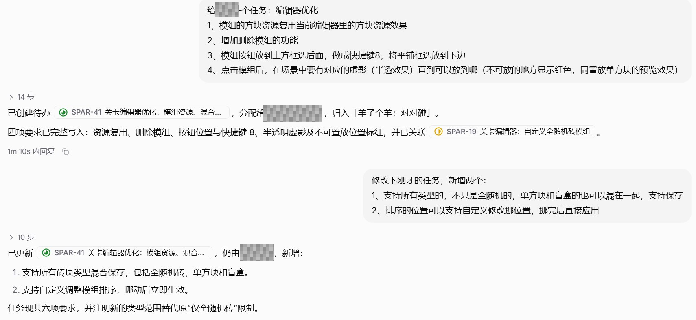
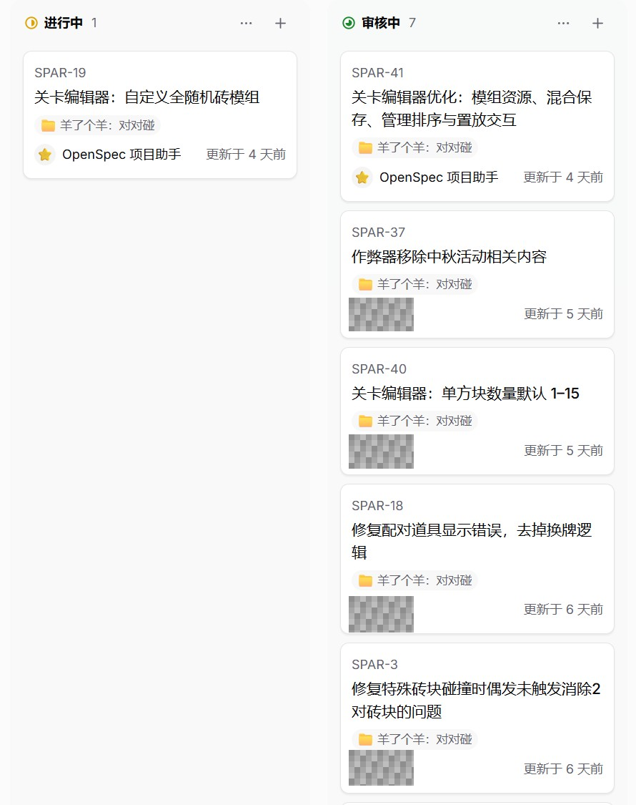
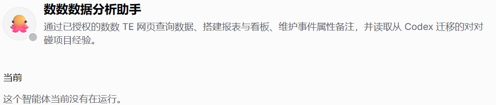

PERSONAL CAPABILITY / 制作与推进
AI 辅助研发
与团队协作.
以产品判断组织工作，把讨论变成任务，把原型变成交付，把反馈变成下一轮迭代。
Multica、Codex、飞书与 Tower 是实践工具；需求澄清、工作拆分、跨岗位协调和最终验收，是我持续承担的工作。
WORKFLOW / 从输入到反馈
一套可追踪的协作方法
需求收口
从已授权的讨论、会议和文档中提取结论、待办与待确认项，先澄清目标和冲突。
产出 · 结论与问题清单任务组织
将需求补成背景、目标、规则、边界、验收及来源；关联原任务，避免追加讨论变成重复建单。
产出 · 可执行任务原型交付
用可运行网页验证交互，把源码、设计说明、效果图和接入说明放入对应需求附件。
产出 · 可体验的交付包人机分工
按任务交给真人成员、项目助手或数据助手；由人确认负责人、优先级、工期与最终口径。
产出 · 明确的责任与状态测试验证
AI 辅助整理测试用例、开展关卡模拟，结合人工试玩和数据反馈检查体验与异常。
产出 · 验证记录与修改项复盘沉淀
将新增要求补回任务，记录完成项、阻塞、调整原因和验收口径，形成下一轮迭代依据。
产出 · 版本记录与项目经验
月报记录 Codex + 飞书／Tower 的协作方法；Multica 截图补充人机分工实践。不据此认定这些平台已全部自动打通。
PRACTICE / 实际使用记录
让需求、附件与变更留在同一条任务里
在关卡编辑器需求中，我先明确资源复用、模组管理和放置预览，再追加混合类型保存与排序要求。助手将新要求更新至原任务，并关联已有需求，程序可沿同一条记录继续工作。

原型不是交付的终点
可运行网页连同源码、设计说明、效果图和技术接入文档作为需求附件交接。先让团队体验规则，再对照说明实现；网页包交付与 Unity 开发、验收分别记录。
变更不只留在聊天里
新讨论补充到原任务，明确新增范围与替代旧规则的部分。保留任务关联及附件，让后来接手的人能找到当前口径和调整依据。
OWNERSHIP / 责任与推进
人做决定，AI 辅助执行，团队共同交付
我负责
- 产品方向、体验判断与范围取舍
- 工作拆分、排期协调及负责人确认
- 冲突澄清、组内验收与最终口径
AI 辅助
- 上下文整理、建单与变更补充
- 原型、文档和测试用例准备
- 授权范围内的数据查询与记录汇总
任务状态服务于下一步行动
用待规划、待办、进行中、审核中、阻塞及完成区分工作阶段。审核中不等于已上线，智能体运行成功也不等于任务通过验收。
延续到跨岗位协作
在 Wordvillas 约百人规模项目中，协作程序、美术与剧情组，承接排期、任务拆分、组内工作验收和项目文档等部分 PM 工作。协作规模非直属人数，不能写成直接管理百人团队。
查看 Wordvillas 跨组协作经历 ↗

VALIDATION / 证据与判断
用模拟筛问题，用体验做判断
关卡模拟 + 人工试玩
阶段月报记录每关进行 10,000 次 AI 模拟，用于筛查极端概率与潜在死局；再结合人工挑战次数、时长、连击、道具使用和主观感受，调整后重新验证。
模拟通关率不等于玩家真实通关率，也不直接构成上线标准；本专题未重新运行或独立审计该批跑测。
专项数据助手
配置数数数据分析助手，使用已授权的网页查询、项目经验及相关技能，支持报表、看板和 AB 测试分析。分析问题与任务记录关联，不以“工具执行成功”替代结论审核。
截图支持助手配置与运行实践，不证明特定分析带来了留存或收入增长。

把调整原因沉淀为团队依据
会议后整理决定、待办与待确认项；版本记录保留“改了什么、为什么改、按什么验收”。《对对碰》六版生命周期方案围绕提示、继续尝试、复活与失败时机收敛，是方法应用于具体体验问题的案例。
查看《对对碰》设计与研发推进案例 ↗《快乐方块屋》竞品研究
玩家为家庭成员选择学校和职业，也能在城市购置产业、安排岗位。生活事件会突然引入新的选择，改变家庭成员的状态或收支。
我确定试玩路线，用 Codex 辅助把事件入口、选择和结果整理成玩法说明和截图索引，供策划查阅。
画面来自安卓模拟器中的原游戏。左右滑动查看。点击截图可放大。
返回首页项目介绍 ↑


资料与说明
依据本人提供的三张 Multica 使用截图、《羊了个羊：对对碰》7–8 月度进展汇报及已确认的跨组协作职责整理。截图裁取相关区域并遮盖人员姓名、昵称与账号，非功能演示页面；不公开完整聊天、连接凭据或内部统计。效率提升幅度未验证，不补写节省工时、自动化比例或增长归因。
返回首页能力介绍 ↑